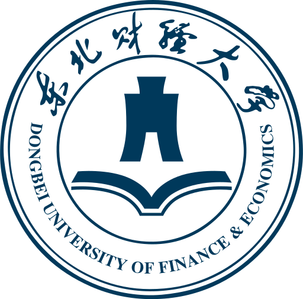
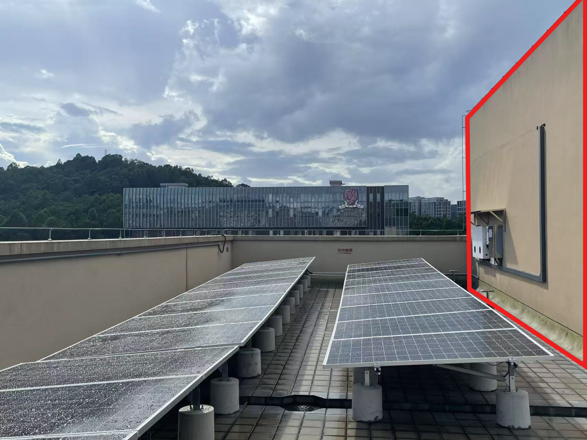

Enhancing PV Power Forecasting Accuracy through Nonlinear Weather Correction Based on Multi-Task Learning
Zhirui Tian, Yujie Chen* (co-first author), and Guangyu Wang. Applied Energy, 386:125525, 2025.
Academic Homepage
Incoming Ph.D. student in Computer Science at The Chinese University of Hong Kong, Shenzhen
I work on learning-based forecasting for energy systems and markets, with recent research spanning photovoltaic power forecasting, electricity price forecasting, crude oil forecasting, hybrid physical-data models, and trustworthy evaluation of large language models.
Research Interests
Energy forecasting, time-series learning, electricity markets, trustworthy AI, and hybrid physical-data modeling.
Education
The Chinese University of Hong Kong, Shenzhen (CUHK-Shenzhen)

Dongbei University of Finance and Economics, Dalian, China
GPA: 4.42/5.0 · Rank: 1/60
Work Experience
School of Data Science, The Chinese University of Hong Kong, Shenzhen
Shenzhen, China
Medical Artificial Intelligence Lab, Westlake University
Hangzhou, China
Key Laboratory of Big Data Management, Optimization and Decision [Website]
Dalian, Liaoning, China
Developed the bionic robot real-time dialogue system.
Services
Reviewer, Applied Energy
Reviewer, IEEE Transactions on Sustainable Energy
Vice President
Yixing Association
Dalian, Liaoning, China
Organized and managed innovation and entrepreneurship projects.
Honors & Awards
Selected Publications
Zhirui Tian, Yujie Chen* (co-first author), and Guangyu Wang. Applied Energy, 386:125525, 2025.

Yujie Chen and Zhirui Tian*. Applied Soft Computing, 112996, 2025.

Yikai Lu, Yujie Chen, and Tongxin Li. 2026 IEEE PES International Meeting (PES IM), pp. 1-5, 2026.

Yuhe Wu, Guangyu Wang, Yuran Chen, Jiatong Zhang, Yutong Zhang, Yujie Chen, Jiaming Shang, Guang Zhang, and Zhuang Liu. ACL 2026 Main Conference, 2026.

Runyao Yu, Derek W. Bunn, Julia Lin, Jochen Stiasny, Fabian Leimgruber, Tara Esterl, Yuchen Tao, Lianlian Qi, Yujie Chen, Wentao Wang, et al. EEM 2026, accepted, indexing pending.